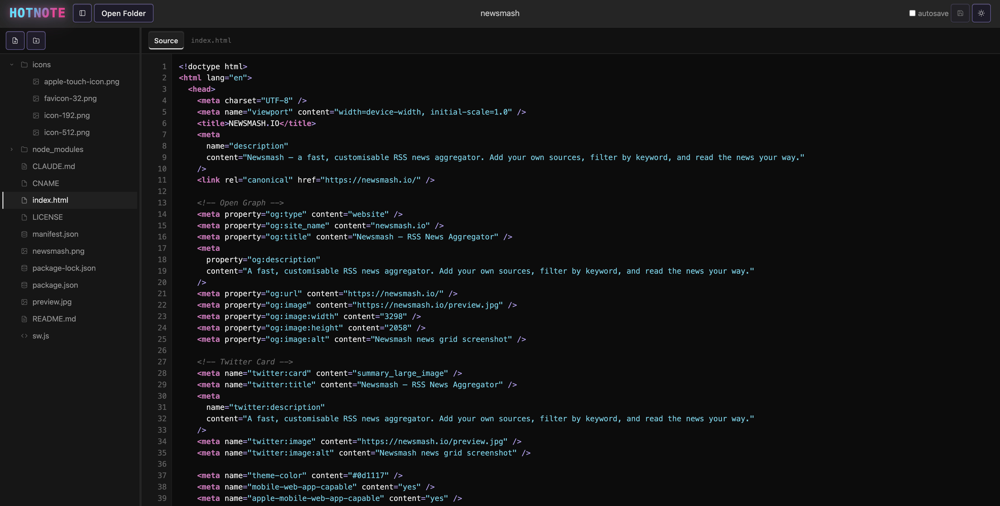

Open any folder from your filesystem, edit code and markdown, preview in real-time — all without ever leaving the tab. No install. No account. No server.

Features
Built for developers who want a lightweight editor without the ceremony of a native app or a cloud IDE.
Local Filesystem Access
Open entire folders directly from your disk using the File System Access API. Read, edit, and save files with no upload, no sync, no cloud.
Markdown Preview
Full GFM rendering with tables, task lists, GitHub-style alerts, and fenced code blocks with syntax highlighting.
Syntax Highlighting
20+ languages including JavaScript, TypeScript, Python, Rust, Go, CSS, HTML, JSON, Markdown, and more.
JSON & CSV Table View
Automatically renders JSON arrays and CSV files as sortable, paginated data tables. Nested objects open in a modal.
JSON Tree View
Explore deeply nested JSON structures with a collapsible tree — perfect for API responses and config files.
Image Viewer
Inline image preview for PNG, JPG, GIF, SVG, and WebP — no separate app needed when browsing asset folders.
Split Pane Mode
Open two files side by side with a draggable divider — great for editing markdown while reading reference code.
Autosave
Enable autosave and changes are written back to disk 2 seconds after you stop typing. No Ctrl+S required.
Session Restore
Reopen the browser and hotnote offers to resume your last folder. Pick up exactly where you left off.
Try it
Toggle between raw source and rendered markdown — exactly like the app.
# hotnote
## What is this?
A **minimalist** browser-based editor that opens
files directly from your filesystem.
## Features
- Local filesystem access (no upload)
- Markdown preview with GFM support
- 20+ languages with syntax highlighting
- Autosave, split pane, JSON tree view
Works in `Chrome` and `Edge` only.A minimalist browser-based editor that opens files directly from your filesystem.
Works in Chrome and Edge only.
JSON Tree View
Any .json file opens as a collapsible tree. Expand and collapse objects and arrays to explore structure at any depth without losing your place.
Arrays of objects get a one-click jump to the Table view, and nested objects inside a table cell open in a focused modal.
CSV & JSON Table View
CSV files open as a sortable, paginated table automatically. JSON arrays of objects get the same treatment — including type-aware rendering for numbers, booleans, and nulls.
Nested objects and arrays inside a cell are shown as a badge you can click to drill into, rather than a wall of escaped text.
| id | name | role | score | active | |
|---|---|---|---|---|---|
| 1 | Alice | alice@acme.com | admin | 98 | true |
| 2 | Bob | bob@acme.com | editor | 74 | false |
| 3 | Carol | carol@acme.com | viewer | 88 | true |
| 4 | Dave | dave@acme.com | admin | 91 | true |
| 5 | Eve | eve@acme.com | editor | 67 | false |
Accessibility
Approximately 300 million people worldwide have some form of color vision deficiency (CVD). Most software fails them by encoding critical information in color alone — red for errors, green for success, colored tabs for state.
Hotnote takes a deliberate greyscale approach to its UI chrome. Active states use border insets and contrast, not color. Information is never conveyed by hue alone. The logo gradient is the single exception — it is branding, not information.
Syntax colors are supplementary. They add richness for those who see them, but the editor remains fully functional without them.
Typical editor (VS Code Dark+)
function fetchData(url) {
// fetch from remote API
const res = await fetch(url);
const count = res.status;
return count === 200;
}hotnote
function fetchData(url) {
// fetch from remote API
const res = await fetch(url);
const count = res.status;
return count === 200;
}Under Deuteranopia or Protanopia simulation, the green comment and orange/yellow identifiers in the left column shift toward indistinguishable brownish tones. The hotnote column is unchanged — and even if its syntax colors blurred, the code structure remains legible because color is never the only signal.
Philosophy
There is something deeply satisfying about a tool that does exactly what it says, loads in under a second, and never asks you to create an account.
Hotnote was inspired by the spirit of MS-DOS Edit and Windows 3.11-era utilities — small, fast, focused. The entire app is plain HTML, CSS, and JavaScript. No bundler. No framework. No node_modules in production. The source code is readable by any developer in any text editor.
When something breaks, you can open DevTools and debug it. When you want to understand it, you can just read it. That is a feature.
Tech stack
Browser compatibility
The File System Access API is powerful but not universally supported yet.
Chrome 86+
Full support, recommended
Edge 86+
Full support
Firefox
No File System Access API
Safari / Mobile
Partial / no support
Open a folder. Start editing. Close the tab when you're done. That's it.
Open App →